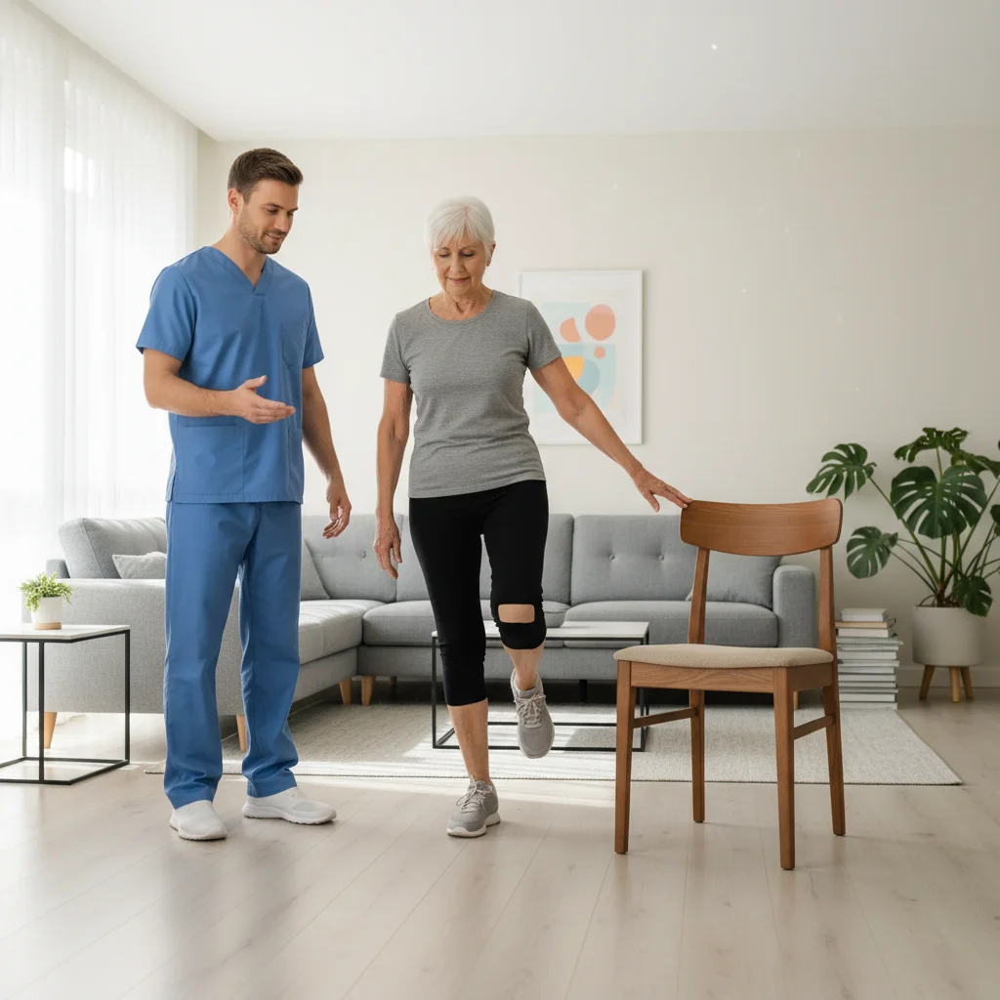

U bent thuis na uw knieprothese en loopt voorzichtig met krukken of een loopstok. De grote vraag: "wanneer kan ik stappen zonder dit hulpmiddel?" Veel patiënten willen dit zo snel mogelijk, maar te vroeg loslaten vergroot het risico op vallen en overbelasting. In dit artikel leest u de 4 criteria om klaar te zijn, een week-per-week tijdlijn, en 5 oefeningen die uw gangrevalidatie versnellen.
Goed om te weten
Er is een verschil tussen krukken (twee steunpunten, eerste weken) en een loopstok (één steunpunt, transitiefase). De meeste patiënten schakelen eerst over van twee krukken naar één loopstok, en daarna naar volledig zelfstandig lopen.
De 4 Criteria om Zonder Loopstok te Stappen
Uw kinesitherapeut en chirurg beoordelen wanneer u klaar bent op basis van vier objectieve criteria. U voldoet idealiter aan alle vier voordat u definitief zonder loopstok stapt:
Balans en Stabiliteit
U kunt minstens 10 seconden op één been staan (het geopereerde been) terwijl u een vinger aan een stoel houdt. Zonder enige stabiliteit is lopen zonder steun onveilig.
Spierkracht
De quadriceps (voorste dijspier) is sterk genoeg om de knie te stabiliseren bij het stappen. Test: u kunt 10 keer na elkaar vanuit een stoel opstaan zonder uw armen te gebruiken.
Pijnbeheersing
U ervaart geen of minimale pijn bij gewoon lopen (maximaal 3/10 op een pijnschaal). Aanhoudende pijn boven 4/10 bij stappen is een teken dat u nog niet klaar bent.
Gangpatroon
U loopt met een vlot, symmetrisch patroon zonder hinken, zwaaien of overmatige rompcompensatie. Een kinesitherapeut beoordeelt dit het beste.
Tijdlijn: Van Krukken naar Vrij Lopen
Onderstaande tijdlijn is een gemiddelde richtlijn voor een standaard totale knieprothese bij een gezonde patiënt. Uw eigen tijdlijn kan afwijken op basis van leeftijd, lichaamsgewicht, algemene conditie en het type operatie.
belastend lopen
belasting mogelijk
zonder steun
thuis + buiten
Let op: buiten vs. thuis
Veel patiënten leggen de loopstok thuis eerder af dan buiten. Dit is normaal en verstandig: buiten zijn er meer risico's (oneven trottoir, drempel, helling). Het is volkomen acceptabel om thuis al zonder loopstok te lopen terwijl u buiten nog de stok meeneemt als veiligheidsnet.

5 Oefeningen om Sneller Zonder Loopstok te Stappen
Deze oefeningen helpen u de spierkracht, balans en coördinatie op te bouwen die nodig zijn om veilig zonder loopstok te lopen. Begin altijd met uw kinesitherapeut die de uitvoering bewaakt — verkeerde uitvoering kan het herstel vertragen.
1. Statisch Balanceren op Één Been
Doel: proprioceptie en enkelstabiliteit verbeteren
Uitvoering: Sta naast een stevige stoel. Hef het niet-geopereerde been lichtjes op en probeer 10 seconden op het geopereerde been te staan. Houd één vinger aan de stoel als veiligheid. Bouw op naar 30 seconden zonder steun.
Herhalingen: 3 sets van 10 seconden, 2× per dag
2. Mini-Squat bij de Stoel
Doel: quadricepskracht en kniestabiliteit
Uitvoering: Sta achter een stoel met uw handen licht op de rugleuning. Buig beide knieën licht (15 tot 20 graden) als een kleine hurkbeweging. Houd 3 seconden vast en kom terug. Let op: knieën wijzen in de richting van uw voeten, rug recht.
Herhalingen: 2 sets van 10 herhalingen, 2× per dag
3. Hieloptrekken (Heelraises)
Doel: kuitkracht en enkelpropulsie bij het afwikkelen van de voet
Uitvoering: Sta met beide voeten plat op de grond achter een stoel. Kom langzaam op uw tenen (hielen van de grond). Houd 2 seconden vast, laat langzaam zakken. Dit verbetert de stuwkracht bij het afzetten van de voet bij elke stap.
Herhalingen: 3 sets van 15 herhalingen, 1× per dag
4. Stap Op - Stap Af (Opstap Oefening)
Doel: coördinatie en vertrouwen bij het oversteken van drempels
Uitvoering: Gebruik een laag opstapje (5 tot 10 cm) of een dikke stapel boeken. Stap met het geopereerde been op het opstapje, breng het andere been erbij, stap terug. Houd een muur of stoel bij. Deze oefening simuleert drempeloversteken en trapgebruik.
Herhalingen: 2 sets van 8 herhalingen per been, 1× per dag
5. Bewust Gangpatroon Oefenen
Doel: symmetrisch, vloeiend looppatroon aanleren
Uitvoering: Loop een korte afstand (gang of kamer) bewust met de focus op: hiel-tot-teen afwikkeling, gelijke staplengte links en rechts, en rechtop romp zonder zijwaartse schommelingen. Begin met de loopstok in de contralaterale hand (de hand tegenover het geopereerde been) en gebruik steeds minder druk.
Frequentie: 5 keer per dag een looppassage van 10 tot 20 meter
Thuisbehandeling met kinesitherapeut
Bij PhysioVisit komt uw kinesitherapeut aan huis in de regio Grimbergen (Grimbergen, Strombeek-Bever, Humbeek, Beigem, Koningslo). Wij beoordelen uw gangpatroon, corrigeren de oefeningstechniek en begeleiden u stap voor stap naar zelfstandig stappen zonder loopstok. Kinesitherapie thuis na een knieoperatie is volledig terugbetaald via uw ziekenfonds.
Factoren die het Zelfstandig Stappen Vertragen of Versnellen
Waarom legt de ene patiënt de loopstok na 3 weken af en de andere na 10 weken? Meerdere factoren spelen een rol:
| Factor | Versnelt herstel | Vertraagt herstel |
|---|---|---|
| Leeftijd | Jonger dan 65 jaar | Ouder dan 75 jaar |
| Lichaamsgewicht | Normaal gewicht (BMI 18-25) | Overgewicht (BMI >30) |
| Conditie voor operatie | Actief, goede spierkracht | Sedentair, spierzwakte |
| Kinetec gebruik | Trouw gebruiksschema gevolgd | Onregelmatig of te weinig gebruik |
| Kinesitherapie | Frequente begeleiding (3-4x/week) | Weinig of geen begeleiding |
| Complicaties | Geen complicaties | Infectie, zwelling, littekenvorming |
Gebruikt u naast uw kinesitherapie ook een hometrainer? Fietsen (vanaf week 4-6) is uitstekend voor het herstel van spierkracht en beweeglijkheid zonder belasting. Meer info over hometrainer huren bij PhysioVisit.
Signalen dat U Nog Niet Klaar Bent
Soms willen patiënten te snel zonder loopstok stappen. Houd uw kinesitherapeut op de hoogte en wacht langer bij deze signalen:
Wacht nog bij de volgende signalen
- Pijn boven 4/10 bij gewoon lopen zonder steun
- Duidelijk hinken — ongelijke stap of rompschommeling
- Kniebuckling: het gevoel dat de knie "weggeeft"
- Aanzienlijke zwelling na het lopen
- Onzekerheid of angst — psychologisch niet klaar zijn is even belangrijk als fysiek
- Binnen 3 weken na operatie — het bot heeft tijd nodig om in te groeien rond de prothese
Kinesitherapie aan Huis na Knieprothese: de Voordelen
Na een knieprothese is transport naar een revalidatiecentrum vaak moeilijk en vermoeiend, zeker in de eerste weken. Thuiskinesitherapie heeft duidelijke voordelen:
- Oefenen in uw eigen omgeving: uw kinesitherapeut beoordeelt uw gangpatroon op uw eigen vloeroppervlak, drempels en trappen
- Geen vermoeiend transport: na een zware revalidatiesessie hoeft u niet de auto of bus in
- Gepersonaliseerde oefeningen: de oefeningen worden aangepast aan uw thuisomgeving
- Vroegere loopstok-onafhankelijkheid: studies tonen aan dat patiënten met thuiskinesitherapie gemiddeld sneller zelfstandig lopen dan patiënten die alleen ambulant worden behandeld
Bij PhysioVisit bieden wij gespecialiseerde thuiskinesitherapie aan in de gemeenten Grimbergen, Strombeek-Bever, Humbeek, Beigem en Koningslo. Meer over onze gangrevalidatie diensten.
Veelgestelde Vragen over Stappen Zonder Loopstok na Knieprothese
Kinesitherapie aan Huis na Knieprothese?
PhysioVisit komt bij u thuis in de regio Grimbergen voor gespecialiseerde gangrevalidatie na knieprothese. Wij begeleiden u tot u volledig zelfstandig loopt.
Conclusie
Stappen zonder loopstok na een knieprothese is een mijlpaal die de meeste patiënten bereiken tussen week 4 en week 6. De sleutel is niet de kalender, maar de 4 criteria: voldoende balans, kniestabiliteit, spierkracht en een vlot gangpatroon. Oefen dagelijks met de 5 oefeningen uit dit artikel en werk nauw samen met uw kinesitherapeut.
Wees geduldig: te snel de loopstok loslaten vergroot het risico op vallen en overbelasting. Bouw het gestaag op — eerst korte afstanden thuis zonder loopstok, daarna buiten, daarna overal. Uw kinesitherapeut begeleidt elke stap.
Bij PhysioVisit zijn wij gespecialiseerd in thuiskinesitherapie na orthopedische ingrepen. Wij komen aan huis in de regio Grimbergen voor gangrevalidatie, oefenbegeleiding en ganganalyse. Maak een afspraak en zet de eerste stap naar volledig zelfstandig lopen.